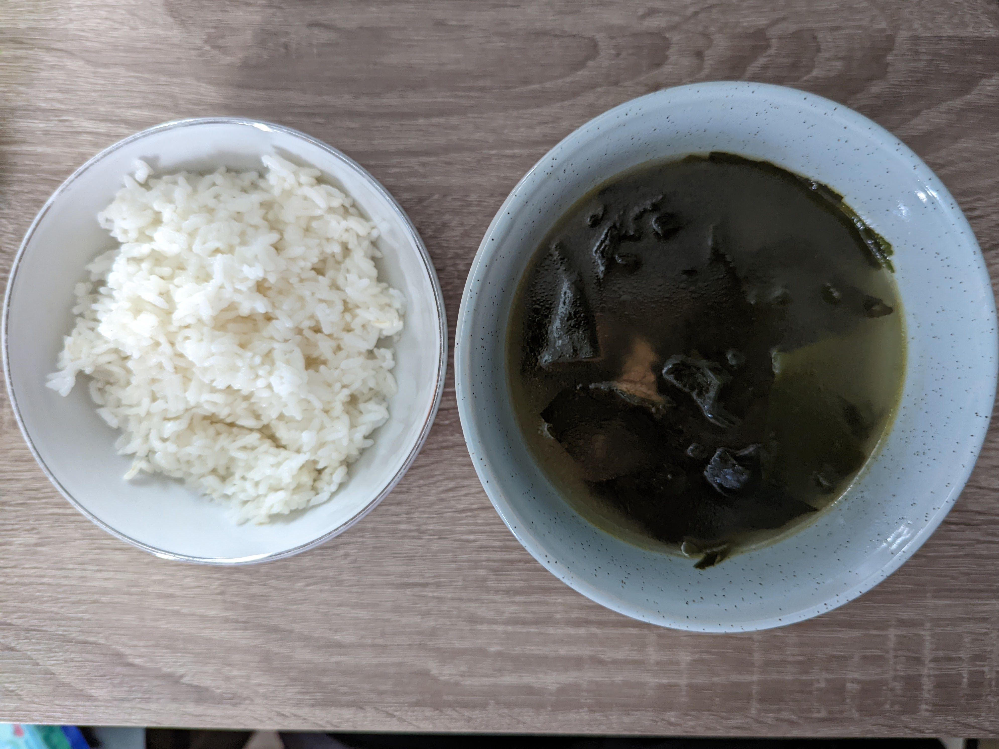

Miyeokguk

Description
Miyeokguk is a Korean soup traditionally consumed on one's birthday.
"Miyeok" means "seaweed" in Korean, and "guk" means "soup." So, "miyeokguk" is "seaweed soup."
Ingredients
- 1 cup beef
- 1 tbsp soy sauce
- 1 tbsp sesame oil
- 1 clove garlic
- 1/4 tsp black pepper
- 1/4 cup dried seaweed
- 1 L rinsed rice water
- 1 L tap water
- 2 tbsp soy sauce
- 2 tsp kosher salt
- 1-2 tbsp fish sauce (to taste)
Steps
- Grab the beef and put it in a bowl.
- Add the black pepper and some soy sauce to the beef.
- Mince the garlic and add it to the beef.
- Use hands to mix everything together evenly.
- Let beef marinate for 15 mins.
- Grab the seaweed and put it in another bowl.
- Add tap water.
- Let the seaweed sit for 30 mins.
- Wash the seaweed.
- Form the seaweed into a ball and chop it into thirds.
- Chop the beef into small pieces.
- Add sesame oil to pot.
- Add beef on medium heat. Cook until mostly brown.
- Add kosher salt and the rest of the soy sauce.
- Add rinsed rice water.
- Add fish sauce.
- Simmer for 20-30 mins.
- Serve with a bowl of rice.